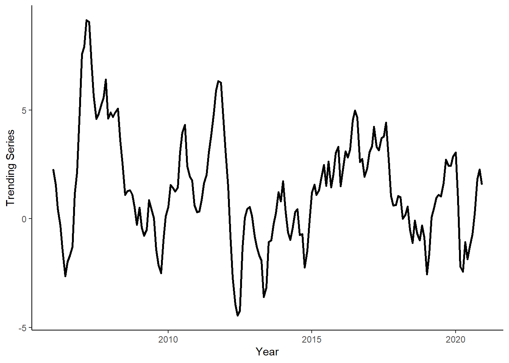
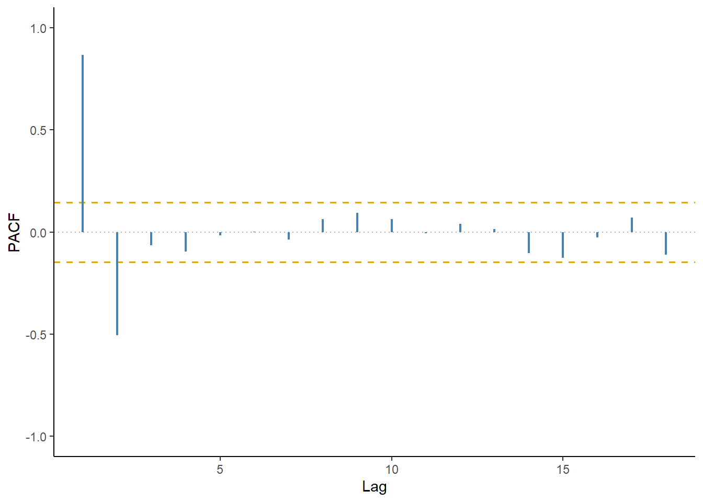
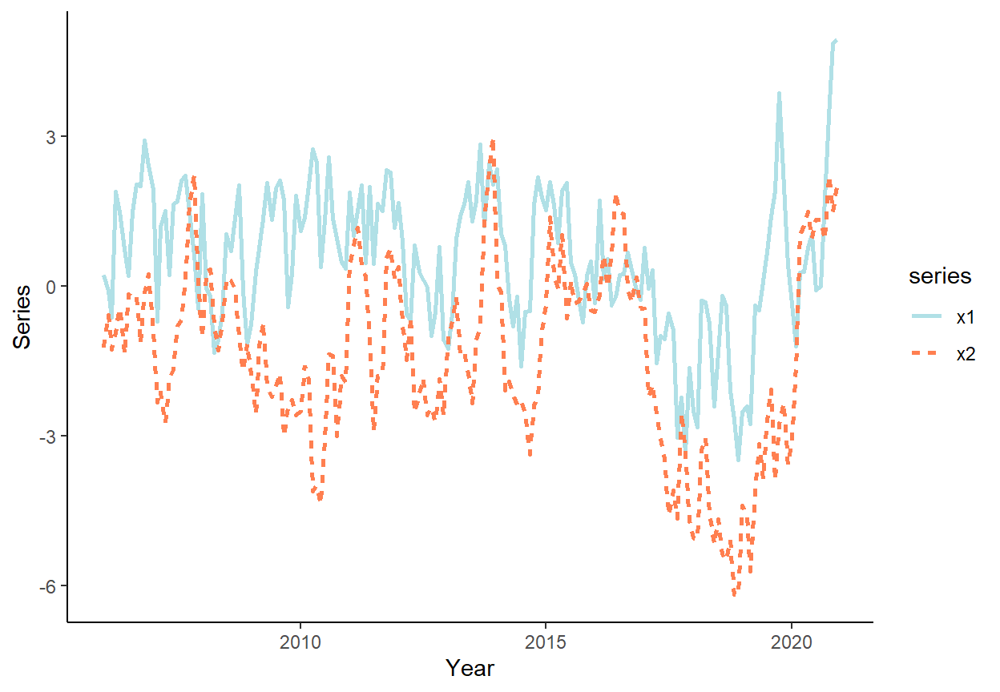

Tutorial 4
In this tutorial, we will generate autocorrelated series, we will apply an information criterion to select a suitable autoregressive model, we will obtain and compare one-step-ahead forecasts from competing models using a rolling window procedure, and we will generate one set of multi-step forecasts to illustrate the convergence to unconditional mean of the series.
Let’s generate a time series that follows an AR(2) process: \(y_{t} = 1.2y_{t-1}-0.3y_{t-2}+e_{t}\), where \(e_{t} \sim N(0,1)\), for \(t=1,\ldots,180\).
n <- 180
set.seed(7)
e <- rnorm(n,0,1)
y <- rep(NA,n)
y[1] <- e[1]
y[2] <- 1.2*y[1]+e[2]
for(i in 3:n){
y[i] <- 1.2*y[i-1]-0.3*y[i-2]+e[i]
}Generate a vector of some arbitrary dates (e.g., suppose we deal with the monthly series beginning from January 2006), and store these along with \(y\) in a data.table, call it ‘dt.’
date <- seq(as.Date("2006-01-01"),by="month",along.with=y)
dt <- data.table(date,y)Plot the realized time series using ggplot function.
ggplot(dt,aes(x=date,y=y))+
geom_line(size=1)+
labs(x="Year",y="Trending Series")+
theme_classic()
Generate and plot the autocorrelation function and the partial autocorrelation function for lags 1 through 18.
acf_vec <- c(acf(dt$y,lag.max=18,plot=F)$acf[-1])
pacf_vec <- c(pacf(dt$y,lag.max=18,plot=F)$acf)
sd_rho <- sqrt(1/n)
acf_dt <- data.table(lags=1:18,acf=acf_vec,pacf=pacf_vec)
ggplot(acf_dt,aes(x=lags,y=acf)) +
geom_hline(yintercept=0,color="darkgray",linetype=3,size=.5) +
geom_hline(yintercept=c(-1.96*sd_rho,1.96*sd_rho),color="goldenrod",linetype=2,size=.6) +
geom_segment(aes(xend=lags,yend=0),color="steelblue",size=.8)+
labs(x="Lag",y="ACF")+
coord_cartesian(ylim=c(-1,1))+
theme_classic()
ggplot(acf_dt,aes(x=lags,y=pacf)) +
geom_hline(yintercept=0,color="darkgray",linetype=3,size=.5) +
geom_hline(yintercept=c(-1.96*sd_rho,1.96*sd_rho),color="goldenrod",linetype=2,size=.6) +
geom_segment(aes(xend=lags,yend=0),color="steelblue",size=.8)+
labs(x="Lag",y="PACF")+
coord_cartesian(ylim=c(-1,1))+
theme_classic()
Calculate Akaike Information Criteria (AIC) and Schwarz Information Criteria (SIC) for AR(1), AR(2), AR(3), and AR(4) models, using all observations in the series, to decide on the optimal lag length.
dt[,`:=`(y_l1=shift(y),y_l2=shift(y,2),y_l3=shift(y,3),y_l4=shift(y,4))]
# get rid of the rows with NAs
dt <- dt[complete.cases(dt)]
IC_dt <- data.table(lag=c(1:4),AIC=NA,SIC=NA)
for(i in 1:nrow(IC_dt)){
fmla <- as.formula(paste("y",paste0("y_l",c(1:i),collapse="+"),sep="~"))
reg.ar <- lm(fmla,data=dt)
IC_dt$AIC[i] <- log(crossprod(reg.ar$residuals))+2*(i+1)/nrow(dt)
IC_dt$SIC[i] <- log(crossprod(reg.ar$residuals))+log(nrow(dt))*(i+1)/nrow(dt)
}
IC_dt## lag AIC SIC
## 1: 1 5.298452 5.334480
## 2: 2 5.010470 5.064513
## 3: 3 5.016720 5.088776
## 4: 4 5.018299 5.108369Generate a sequence of one-step-ahead forecasts from random walk, as well as AR(1), AR(2), and AR(3), using the rolling window scheme, where the first rolling window ranges from period 1 to period 120.
R <- 120
P <- nrow(dt)-R
dt$rw <- NA
dt$ar1 <- NA
dt$ar2 <- NA
for(i in 1:P){
dt$rw[R+i] <- dt$y[R-1+i]
ar1 <- lm(y~y_l1,data=dt[i:(R-1+i)])
ar2 <- lm(y~y_l1+y_l2,data=dt[i:(R-1+i)])
dt$ar1[R+i] <- ar1$coefficients[1]+ar1$coefficients[2]*dt$y[R-1+i]
dt$ar2[R+i] <- ar2$coefficients[1]+ar2$coefficients[2]*dt$y[R-1+i]+ar2$coefficients[3]*dt$y[R-2+i]
}Calculate the RMSFE measures for all considered models.
dt[,`:=`(rw_e=y-rw,ar1_e=y-ar1,ar2_e=y-ar2)]
rmsfe_rw <- sqrt(mean(dt$rw_e^2,na.rm=T))
rmsfe_ar1 <- sqrt(mean(dt$ar1_e^2,na.rm=T))
rmsfe_ar2 <- sqrt(mean(dt$ar2_e^2,na.rm=T))
rmsfe_rw## [1] 1.017931rmsfe_ar1## [1] 0.9782388rmsfe_ar2## [1] 0.8970604Using the first rolling window as the information set, generate the multi-step-ahead forecast for the hold-out period.
dt[,`:=`(ar2_multi=y)]
ar2 <- lm(y~y_l1+y_l2,data=dt[1:R])
for(i in 1:P){
dt$ar2_multi[R+i] <- ar2$coefficients[1]+ar2$coefficients[2]*dt$ar2_multi[R-1+i]+ar2$coefficients[3]*dt$ar2_multi[R-2+i]
}
dt[1:R]$ar2_multi <- NA
ggplot(dt,aes(x=date))+
geom_line(aes(y=y),color="darkgray",size=1)+
geom_line(aes(y=ar2_multi),color="steelblue",na.rm=T,size=1,linetype=5)+
theme_classic()